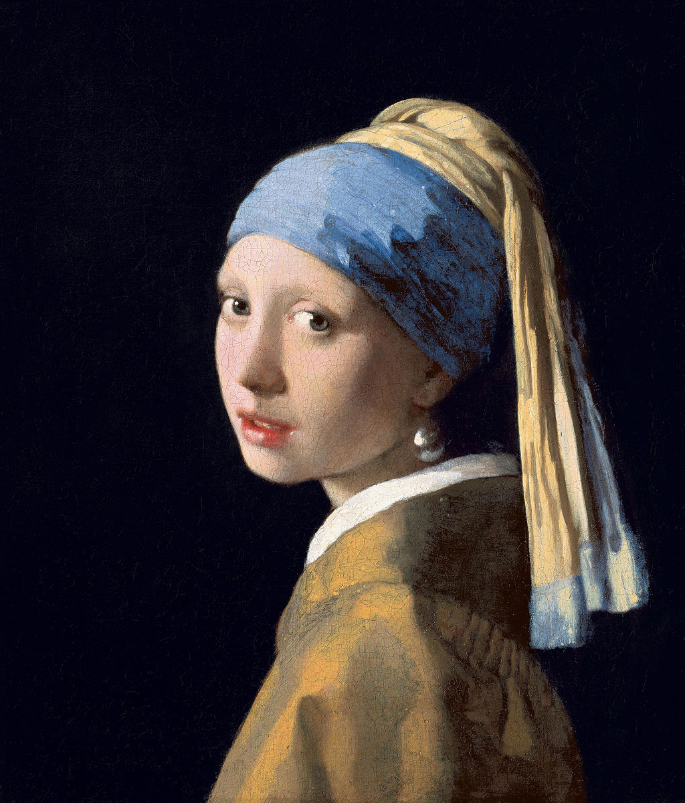

Before you inspect anything else, make sure you know exactly what you're protecting. Search online for this painting's full title and the artist who painted it — it's one of the most famous paintings in the world.
Once you're sure, study the real reference photo below very closely. It's an actual photograph of the genuine painting, kept on file for comparison. The gallery's paperwork claims her headscarf is gold from top to bottom. Look at the part wrapped snugly around her head — not the long piece hanging down over her shoulder. In one word, what color is it really?

Compare the front of the headscarf to the long piece trailing down the back — they are not the same color.
💡 Did you know? Vermeer's paint contained real ultramarine, made from crushed lapis lazuli stone. In the 1600s, this deep blue pigment cost more than gold — but Vermeer used it anyway, even hidden in shadows nobody would really notice.
In the workshop's storage room, you find a torn page from a portfolio. It lists four painters whose "style" the forger claims to have studied: Johannes Vermeer, Rembrandt van Rijn, Frans Hals, and Claude Monet.
Search online to check each painter's era. Three of them worked side by side during the Dutch Golden Age, in the 1600s. One of them lived and painted almost two centuries later, in a totally different country and a totally different style.
Which painter does not belong on this list? Type only his last name.
Search each name plus the word "painter" and look at the birth and death years next to it.
The gallery needs a secure display case for the whole exhibition — fast. Two companies send in quotes covering the entire 6-month exhibition:
Grab a pencil for this one. Add up the TOTAL cost for each company across the full 6 months. How many more euros, in total, would Crystal Case Co. end up costing compared to SafeGlass NL? Type just the number of euros.
Don't just compare the two starting numbers — one of these deals keeps adding a fee every single month.
Crystal Case Co.'s total = €600 + (€60 × 6 months). Work that out, then compare it to SafeGlass NL's flat €900.
💡 Did you know? Art historians nicknamed this painting the "Mona Lisa of the North." Nobody knows for sure who the girl really was — just like nobody is completely certain why the Mona Lisa is smiling.
Case file: the real canvas measures 445 mm wide by 390 mm tall (that's 44.5 cm by 39 cm) — copied straight from the museum's own records. The gallery gift shop wants to sell a mini print that keeps the painting's EXACT proportions, just shrunk down to fit a postcard rack.
If the mini print is 100 mm tall, how wide should it be to keep the exact same shape as the original? Grab a pencil for this one. Round your answer to the nearest whole millimeter, and type just the number.
Set up a fraction: the real width over the real height should equal the mini width over the mini height.
Try: mini width = 445 × (100 ÷ 390). Work that out, then round to the nearest whole millimeter.
Behind a loose floorboard in the gallery's old workshop, you find a torn note written in a strange code — dots, boxes, and angled lines instead of letters. It looks like the forger's own private notes from a paint test.
This kind of code is called a pigpen cipher. Every letter of the alphabet is drawn as the outline of a little box, or one arm of an X-shape — some with a dot added, some without. Use the key below to decode the message.
Agent's notebook: whatever word you decode, jot it down somewhere safe. You'll need to remember it later in the case — without anyone reminding you where it came from.
Each letter's code is just the lines that box it in, plus a dot for grid 2 / W-Z.
Match each symbol's outline to the matching box in the key — count how many sides it has, and check for a dot.
Symbols 2, 4, and 6 all look identical — that letter repeats three times in this word. The whole word names a color.
💡 Did you know? In 2018, scientists studied the real painting non-stop for two straight weeks using special scanning equipment. They discovered Vermeer had painted tiny eyelashes around the girl's eyes — so small that nobody could ever spot them with just their own eyes, not even art experts standing right in front of the canvas.
Five visitors signed the gallery's guest log the night before the swap: Ava, Ben, Cora, Diego, and Elin. Match each one to their arrival time, the item they were carrying, their favorite color, and the room where they lingered. Read every clue carefully — several of them only make sense once you combine them with another.
Arrival times: 6:00, 6:15, 6:30, 6:45, 7:00 pm
Items carried: paintbrush, palette knife, magnifying glass, cotton gloves, UV flashlight
Favorite colors: red, blue, green, yellow, purple
Rooms: Dutch Room, Sculpture Hall, Print Gallery, Modern Wing, Entrance Lobby
Security just found a fresh smudge of oil paint on the alarm switch inside the Modern Wing. Whoever was in there, wearing gloves, is your prime suspect. Name them.
Start with the two visitors whose arrival time is stated directly — everything else builds outward from there.
Once you know who held the cotton gloves, one clue tells you exactly which room to focus on.
The gallery's paperwork folder holds two "Certificates of Provenance" for the painting — official-looking documents about its history. They can't both be right.
Stage 1 of 2
Search online to check: which real museum has always owned and displayed this painting? Then decide — which certificate matches reality? Type A or B.
Search the exact name of the painting plus the word "museum."
The correct museum's name starts with "M," and it's in The Hague — not Amsterdam.
Stage 2 of 2
The certificate you decided to trust also mentions a big scientific research project. Look again at what it says. In what year did that research project happen? Type just the year.
It's written right there in the certificate you trusted — read it again carefully.
Stage 1 of 2
The chief inspector needs one last detail before the case can close: the exact name of that pigment from the coded note in the workshop safe — the one you were told not to forget. Type it below.
It wasn't a person's name or a place — it was a color.
You cracked it using a grid of dots and lines, hidden behind a floorboard.
Stage 2 of 2
Whatever that pigment proves, one thing is certain: you just solved a case using photographs, math, secret codes, logic, and careful research — all at once. There's a word for combining very different ideas to crack one big problem. Unscramble these letters to find it:
Y T I V A E R C T I
It starts with the same letter as "create."
It rhymes with "activity."
The real masterpiece goes back to its museum, and the forger's copy becomes Exhibit A. It took creativity — mixing photographs, ciphers, math, and careful research into one case — to catch what the grown-ups missed. Well done, Detective.